Git
Що таке системи контролю версій?
Системи контролю версій (VCS) — це інструменти для збереження змін у проєктах. Вони дозволяють відслідковувати історію змін, працювати в команді та повертатись до попередніх версій коду.
Що таке Git?
Git — це розподілена система контролю версій, створена Лінусом Торвальдсом у 2005 році. Git є найпопулярнішою системою контролю версій у світі.
Переваги Git
- Локальне збереження історії змін
- Швидка робота
- Гілки та злиття (branches & merge)
- Підтримка відкритих і закритих проєктів
- Безкоштовний і відкритий код
10 базових команд Git
git init— ініціалізує новий репозиторійgit clone <url>— копіює існуючий репозиторійgit status— показує стан файлів у репозиторіїgit add <file>— додає файл до індексуgit commit -m "повідомлення"— фіксує зміниgit log— показує історію комітівgit branch— показує/створює гілкиgit checkout <branch>— перемикає гілкуgit merge <branch>— зливає гілкиgit push— надсилає зміни на сервер
Сертифікат курсу по Git
Bash
GNU/Linux
GNU/Linux — це вільна та відкрита операційна система, яка складається з ядра Linux, розробленого Лінусом Торвальдсом у 1991 році, та компонентів проєкту GNU, започаткованого Річардом Столлманом. Вона є стабільною, безпечною та гнучкою, що дозволяє використовувати її на різноманітних пристроях — від серверів і суперкомп’ютерів до смартфонів і домашніх ПК. Завдяки відкритому коду користувачі мають змогу змінювати систему під свої потреби, а велика кількість дистрибутивів (наприклад, Ubuntu, Debian, Fedora) дає змогу обрати оптимальний варіант для різних завдань.
Перелік найбільш популярних дистрибутивів
- Ubuntu
- Fedora
- Arch
- Debian
- Gentoo
- Mint
Приклади команд роботи в Linux
- 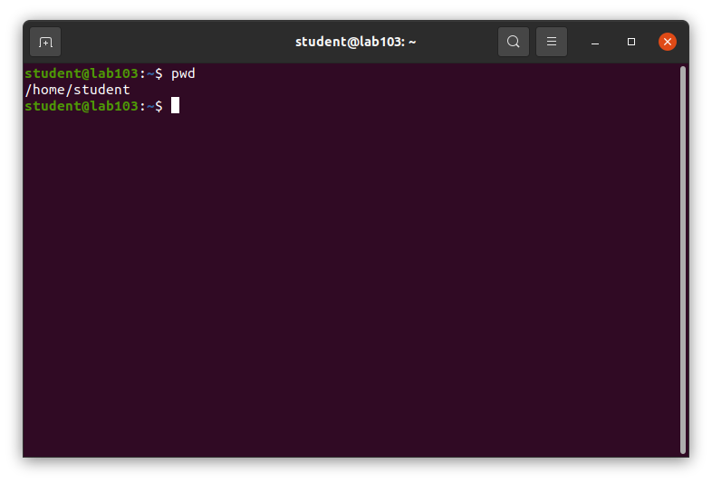
- 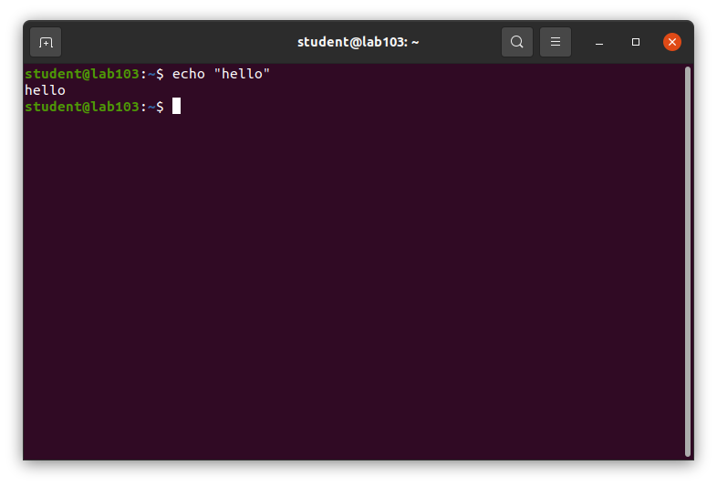
- 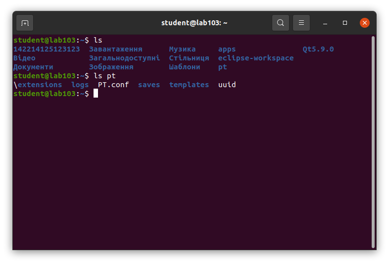
- 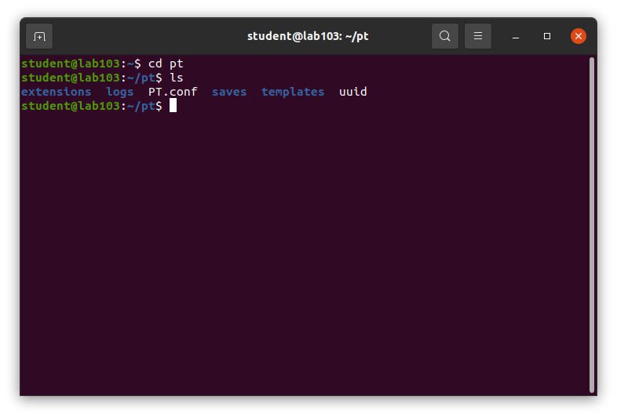
- 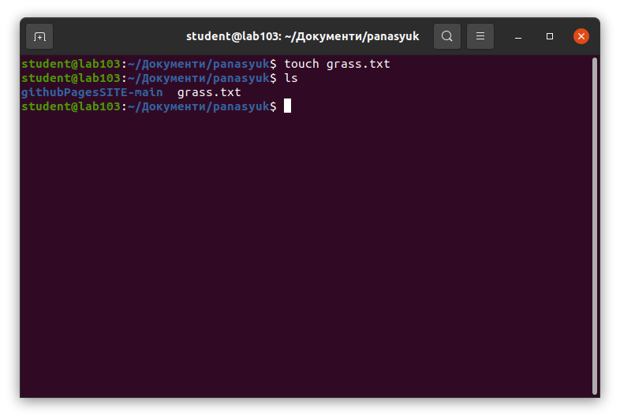
- 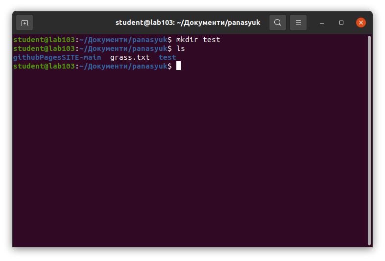
- 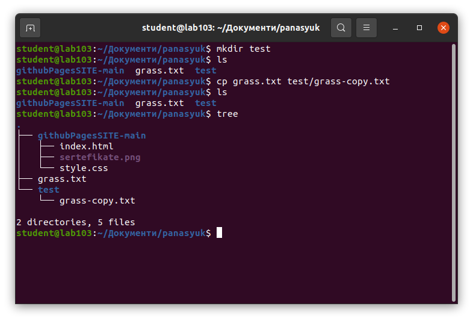
- 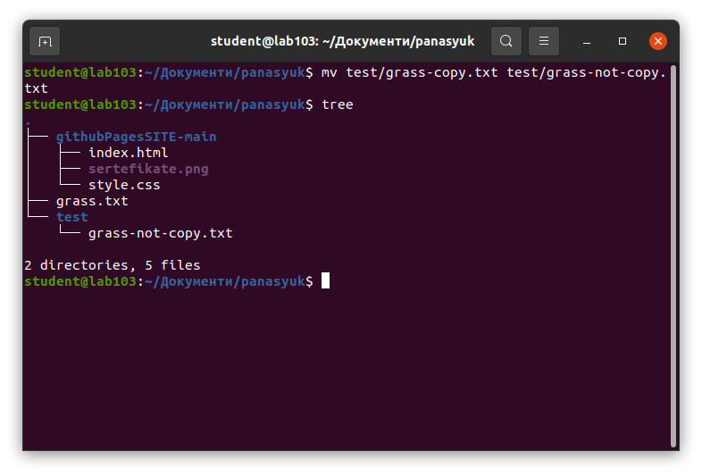

- 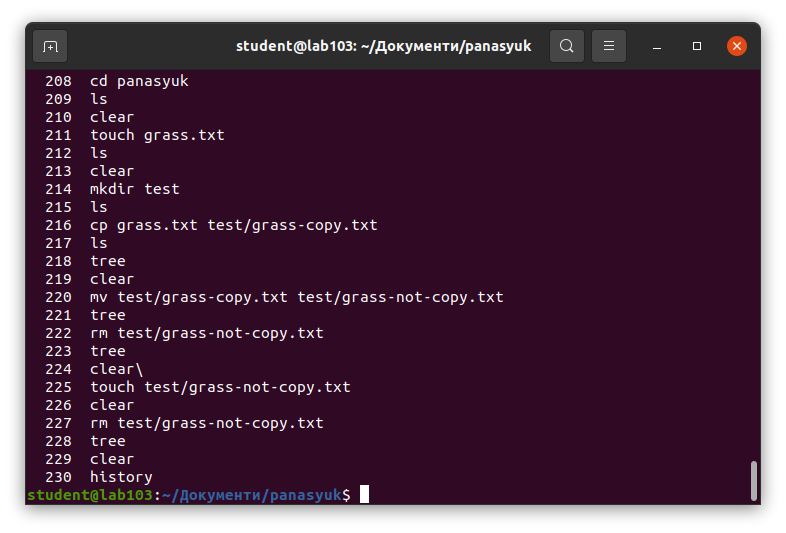
BASH скрипт для перевірки пароля
-
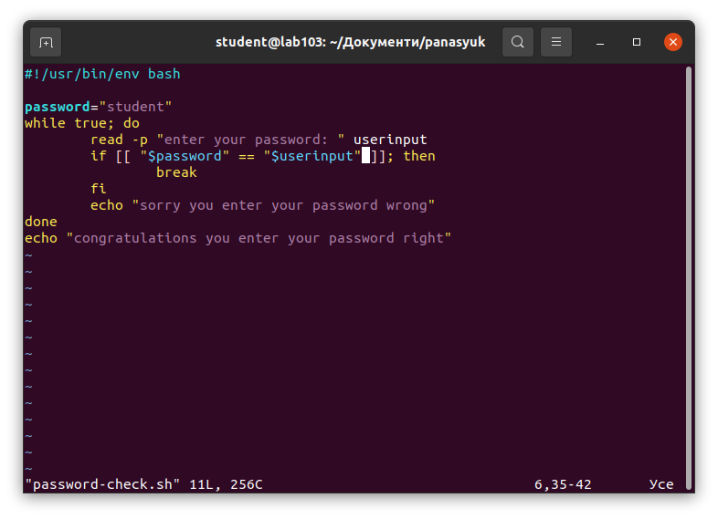
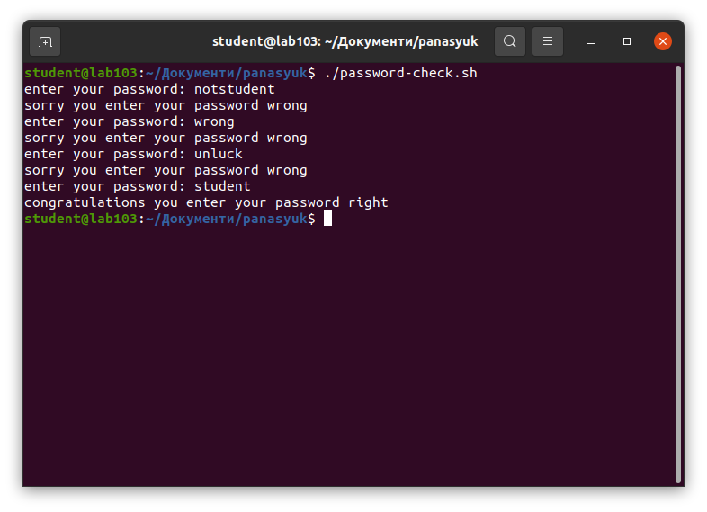